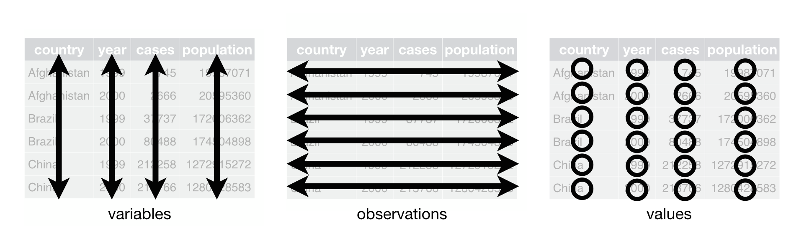
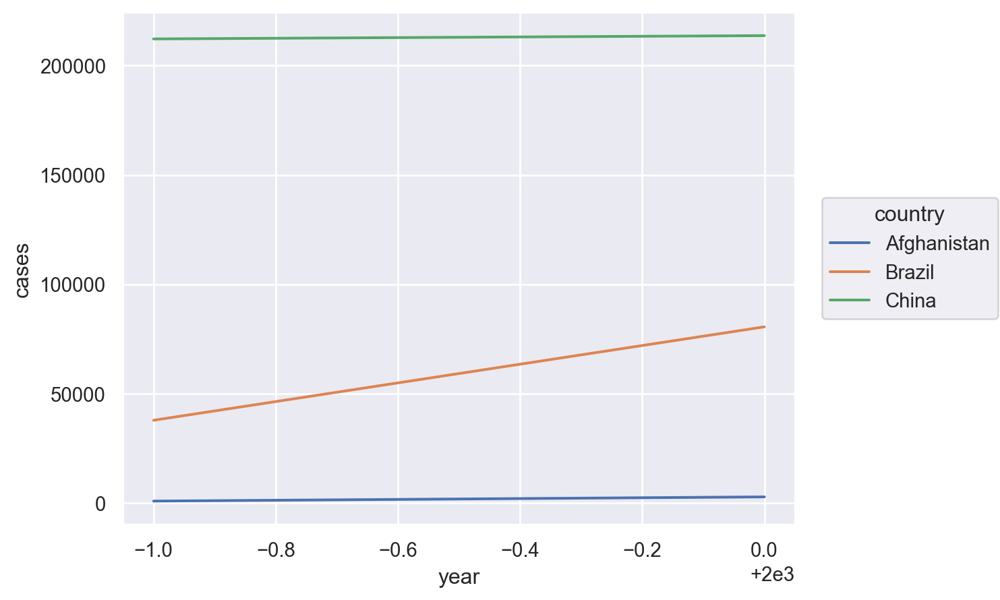
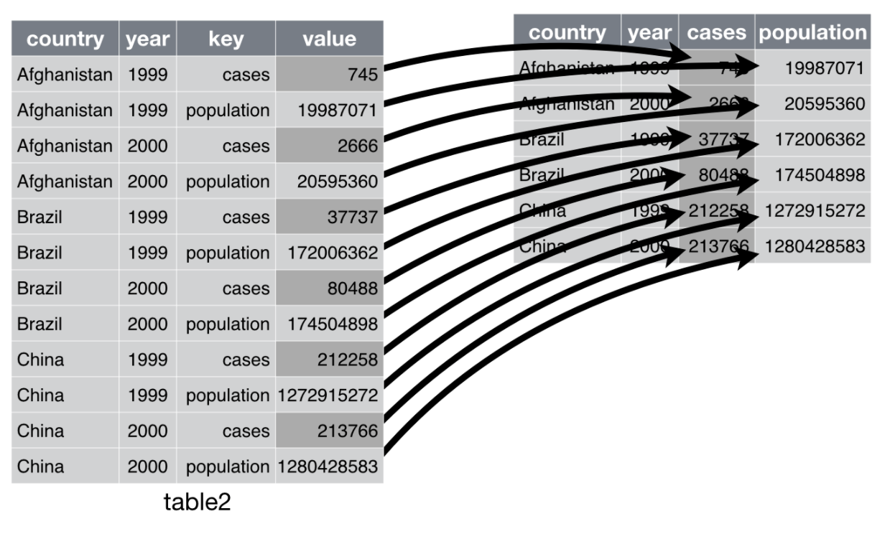

Load Packages
# numerical calculation & data frames
import numpy as np
import pandas as pd
# visualization
import matplotlib.pyplot as plt
import seaborn as sns
import seaborn.objects as so
# statistics
import statsmodels.api as smR for Data Science by Wickham & Grolemund
# numerical calculation & data frames
import numpy as np
import pandas as pd
# visualization
import matplotlib.pyplot as plt
import seaborn as sns
import seaborn.objects as so
# statistics
import statsmodels.api as sm# pandas options
pd.set_option("mode.copy_on_write", True)
pd.options.display.precision = 2
pd.options.display.float_format = '{:.2f}'.format # pd.reset_option('display.float_format')
pd.options.display.max_rows = 7
# Numpy options
np.set_printoptions(precision = 2, suppress=True)Tidy data의 요건

아래의 데이터는 모두 같은 4가지 정보, country, year, cases, population을 담고 있으나 table1만 tidy
table1 = sm.datasets.get_rdataset("table1", "tidyr").data
table1 # tidy data country year cases population
0 Afghanistan 1999 745 19987071
1 Afghanistan 2000 2666 20595360
2 Brazil 1999 37737 172006362
3 Brazil 2000 80488 174504898
4 China 1999 212258 1272915272
5 China 2000 213766 1280428583table2 = sm.datasets.get_rdataset("table2", "tidyr").data
table2 country year type count
0 Afghanistan 1999 cases 745
1 Afghanistan 1999 population 19987071
2 Afghanistan 2000 cases 2666
.. ... ... ... ...
9 China 1999 population 1272915272
10 China 2000 cases 213766
11 China 2000 population 1280428583
[12 rows x 4 columns]table3 = sm.datasets.get_rdataset("table3", "tidyr").data
table3 country year rate
0 Afghanistan 1999 745/19987071
1 Afghanistan 2000 2666/20595360
2 Brazil 1999 37737/172006362
3 Brazil 2000 80488/174504898
4 China 1999 212258/1272915272
5 China 2000 213766/1280428583table4a = sm.datasets.get_rdataset("table4a", "tidyr").data
table4a country 1999 2000
0 Afghanistan 745 2666
1 Brazil 37737 80488
2 China 212258 213766table4b = sm.datasets.get_rdataset("table4b", "tidyr").data
table4b country 1999 2000
0 Afghanistan 19987071 20595360
1 Brazil 172006362 174504898
2 China 1272915272 1280428583기본적으로 table1의 형태일 때, 효과적으로 데이터를 다룰 수 있음
# Compute rate per 10,000
table1.assign(
rate = lambda x: x.cases / x.population * 10_000
) country year cases population rate
0 Afghanistan 1999 745 19987071 0.37
1 Afghanistan 2000 2666 20595360 1.29
2 Brazil 1999 37737 172006362 2.19
3 Brazil 2000 80488 174504898 4.61
4 China 1999 212258 1272915272 1.67
5 China 2000 213766 1280428583 1.67# Compute cases per year
table1.groupby("year")["cases"].sum()year
1999 250740
2000 296920
Name: cases, dtype: int64# Visualise changes over time
(
so.Plot(table1, x="year", y="cases")
.add(so.Line(), color="country")
)
melt()
stack(): index에 적용
table4a country 1999 2000
0 Afghanistan 745 2666
1 Brazil 37737 80488
2 China 212258 213766
table4a.melt(id_vars="country") # pd.melt(table4a, id_vars="country") country variable value
0 Afghanistan 1999 745
1 Brazil 1999 37737
2 China 1999 212258
3 Afghanistan 2000 2666
4 Brazil 2000 80488
5 China 2000 213766table4a_long = table4a.melt(id_vars="country", var_name="year", value_name="cases")
table4a_long country year cases
0 Afghanistan 1999 745
1 Brazil 1999 37737
2 China 1999 212258
3 Afghanistan 2000 2666
4 Brazil 2000 80488
5 China 2000 213766stack()은 index를 이용해 long form으로 변환시켜 줌
table4a.set_index("country").stack() # Series
# country
# Afghanistan 1999 745
# 2000 2666
# Brazil 1999 37737
# 2000 80488
# China 1999 212258
# 2000 213766
# dtype: int64
table4a.set_index("country").stack().unstack(level=0)
# country Afghanistan Brazil China
# 1999 745 37737 212258
# 2000 2666 80488 213766table4b country 1999 2000
0 Afghanistan 19987071 20595360
1 Brazil 172006362 174504898
2 China 1272915272 1280428583table4b_long = table4b.melt(
id_vars="country",
var_name="year",
value_name="population",
value_vars=["1999", "2000"] # specify value variables
)
table4b_long country year population
0 Afghanistan 1999 19987071
1 Brazil 1999 172006362
2 China 1999 1272915272
3 Afghanistan 2000 20595360
4 Brazil 2000 174504898
5 China 2000 1280428583pd.merge(table4a_long, table4b_long) # keys: "country" & "year" country year cases population
0 Afghanistan 1999 745 19987071
1 Brazil 1999 37737 172006362
2 China 1999 212258 1272915272
3 Afghanistan 2000 2666 20595360
4 Brazil 2000 80488 174504898
5 China 2000 213766 1280428583pivot()
unstack(): index에 적용
table2 country year type count
0 Afghanistan 1999 cases 745
1 Afghanistan 1999 population 19987071
2 Afghanistan 2000 cases 2666
.. ... ... ... ...
9 China 1999 population 1272915272
10 China 2000 cases 213766
11 China 2000 population 1280428583
[12 rows x 4 columns]
table2.pivot(index=["country", "year"], columns="type", values="count")type cases population
country year
Afghanistan 1999 745 19987071
2000 2666 20595360
Brazil 1999 37737 172006362
2000 80488 174504898
China 1999 212258 1272915272
2000 213766 1280428583unstack()은 index를 이용해 wide form으로 변환시켜 줌
맨 안쪽 index level (level=2)에 default로 적용
table2.set_index(["country", "year", "type"]).unstack()
# count
# type cases population
# country year
# Afghanistan 1999 745 19987071
# 2000 2666 20595360
# Brazil 1999 37737 172006362
# 2000 80488 174504898
# China 1999 212258 1272915272
# 2000 213766 1280428583stack(), unstack()에 대한 자세한 사항은 책을 참고: 8.3 Reshaping and Pivoting in McKinney’s
table3 country year rate
0 Afghanistan 1999 745/19987071
1 Afghanistan 2000 2666/20595360
2 Brazil 1999 37737/172006362
3 Brazil 2000 80488/174504898
4 China 1999 212258/1272915272
5 China 2000 213766/1280428583rate에 있는 case와 population 정보를 분리
table3["rate"].str.split("/", expand=True) 0 1
0 745 19987071
1 2666 20595360
2 37737 172006362
3 80488 174504898
4 212258 1272915272
5 213766 1280428583table3[["cases", "population"]] = \
table3.pop("rate").str.split("/", expand=True) # pop: 제거와 선택 동시
table3 country year cases population
0 Afghanistan 1999 745 19987071
1 Afghanistan 2000 2666 20595360
2 Brazil 1999 37737 172006362
3 Brazil 2000 80488 174504898
4 China 1999 212258 1272915272
5 China 2000 213766 1280428583year를 앞 두자리와 뒤 두자리를 나눔
Regular expression등의 string manipulation에 대해서는
table3["year"].astype("string").str.extract(r'(\d{2})(\d{2})') 0 1
0 19 99
1 20 00
2 19 99
3 20 00
4 19 99
5 20 00table5 = table3.copy()table5[["century", "year"]] = table3["year"].astype("string").str.extract(r'(\d{2})(\d{2})')table5 country year cases population century
0 Afghanistan 99 745 19987071 19
1 Afghanistan 00 2666 20595360 20
2 Brazil 99 37737 172006362 19
3 Brazil 00 80488 174504898 20
4 China 99 212258 1272915272 19
5 China 00 213766 1280428583 20다시 century와 year 합치기
table5["century"].str.cat(table5["year"])0 1999
1 2000
2 1999
3 2000
4 1999
5 2000
Name: century, dtype: string